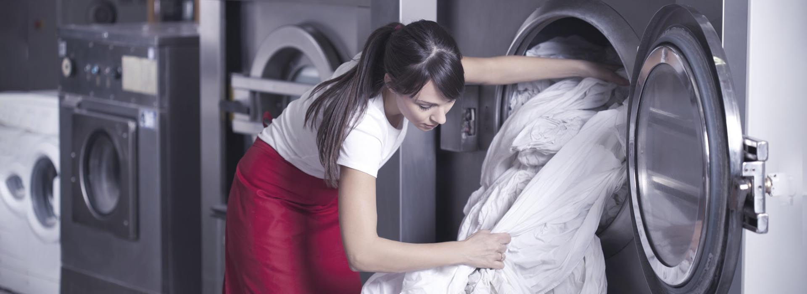

//= template/header-main.html
<main class="main">
    <section class="promo">
        <picture class="promo__picture">
            
        </picture>
        <div class="promo__container container">
            <h1 class="promo__title title title_h1">Всё для химчисток и прачечных</h1>
            <ul class="promo__list">
                <li class="promo__item">Не содержат аммиак и соответствуют немецкому стандарту RAL-GZ 992/1</li>
                <li class="promo__item">Прямые поставки из Италии профессиональных моющих средств и оборудования</li>
                <li class="promo__item">Доставка по СПб бесплатно</li>
            </ul>
        </div>
    </section>
    <section class="adw">
        <div class="adw__container container">
            <ul class="adw__grid">
                <li class="adw__item">
                    <h2 class="adw__title title title_h2">Профессиональные средства</h2>
                    <p class="adw__text">
                        Качественные профессиональные стредства из Италии на основе передовых технологий
                    </p>
                </li>
                <li class="adw__item">
                    <h2 class="adw__title title title_h2">Оборудование</h2>
                    <p class="adw__text">
                        Качественные профессиональные стредства из Италии на основе передовых технологий
                    </p>
                </li>
                <li class="adw__item">
                    <h2 class="adw__title title title_h2">Готовые решения</h2>
                    <p class="adw__text">
                        Качественные профессиональные стредства из Италии на основе передовых технологий
                    </p>
                    <div class="adw__bottom">
                        <p class="adw__num">7</p>
                        <p class="adw__text">
                            <b>
                                Уникальных<br>
                                методик<br>
                                чистки
                            </b>
                        </p>
                    </div>
                </li>
            </ul>
        </div>
    </section>
</main>
//= template/footer.html
